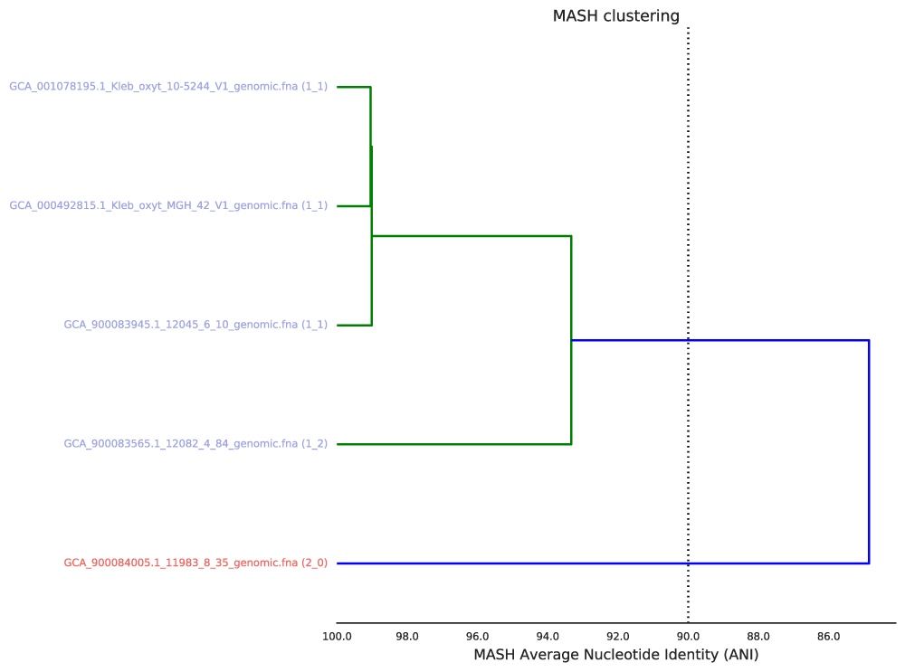
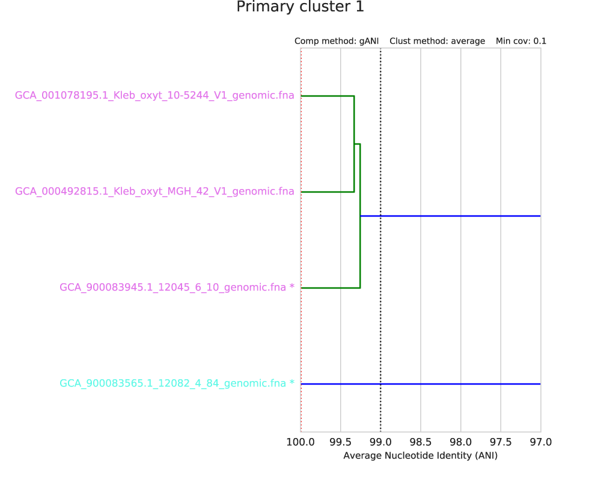
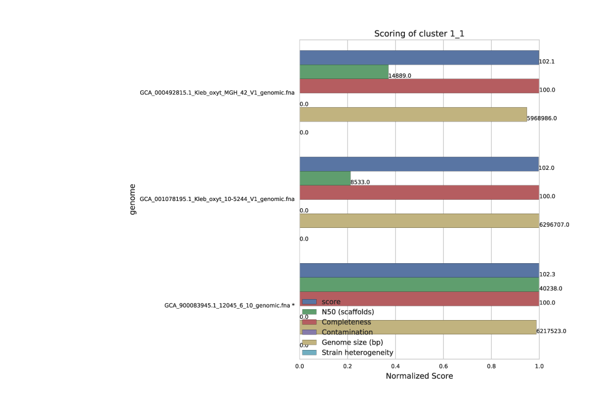
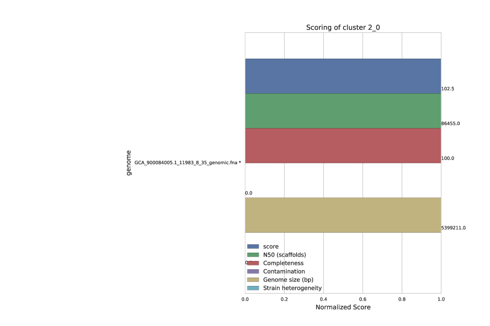

Primary_clustering_dendrogram

The primary clustering dendrogram summarizes the pair-wise Mash distance between all genomes in the genome list.
The dotted line provides a visualization of the primary ANI - the value which determines the creation of primary clusters. It is drawn in the above figure at 90% ANI (the default value). Based on the above figure you can see that two primary clusters were formed- one with genomes colored blue, and one red.
Note
Genomes in the same primary cluster will be compared to each other using a more sensitive algorithm (gANI or ANIm) in order to form secondary clusters. Genomes which are not in the same primary cluster will never be compared again.
Secondary_clustering_dendrograms

Each primary cluster with more than one member will have a page in the Secondary clustering dendrograms file. In this example, there is only one primary cluster with > 1 member.
This dendrogram summarizes the pair-wise distance between all organisms in each primary cluster, as determined by the secondary algorithm (gANI / ANIm). At the very top the primary cluster identity is shown, and information on the secondary clustering algorithm parameters are shown above the dendrogram itself. You can see in the above figure that this secondary clustering was performed with gANI, the minimum alignment coverage is 10%, and the hierarchical clustering method is average.
The black dotted line shows the secondary clustering ANI (in this case 99%). This value determines which genomes end up in the same secondary cluster, and thus are considered to be the “same”. In the above figure, two secondary cluster are formed. The “best” genome of each secondary cluster is marked with as asterisk.
The red line shows the lowest ANI for a “self-vs-self” comparison of all genomes in the genome list. That is, when each genome in this primary cluster is compared to itself, the red line is the lowest ANI you get. This represents a “limit of detection” of sorts. gANI always results in 100% ANI when self-vs-self comparisons are performed, but ANIm does not (as shown in the figure below). Note also that the secondary algorithm information above the dendrogram is changed in the figure below as well.

Note
The above figure was made with the command:
mattolm@biotite /data8/Human/NIH_4/testing_Datasets/Klebsiella_oxytoca $ dRep analyze complete_only/ -c 1
Cluster_scoring



Each secondary cluster will have its own page in the Cluster scoring figure. There are three secondary clusters in this example- 2 of which came from primary cluster 1, and 1 of which is the only member of primary cluster 2.
These figures show the score of each genome, as well as all metrics that can go into determining the score. This helps the user visualize the quality of all genomes, and ensure that they agree with the genome chosen as “best”. The “best” genome is marked with an asterisk, and will always be the genome with the highest score.
One genome will be selected from each secondary cluster to be included in the de-replicated genome set. So in the above example, we will have 3 genomes in the de-replicated genome set. This is because the algorithm decided that all genomes in cluster 1_1 were the “same”, and chose GCA_900083945 as the “best”.